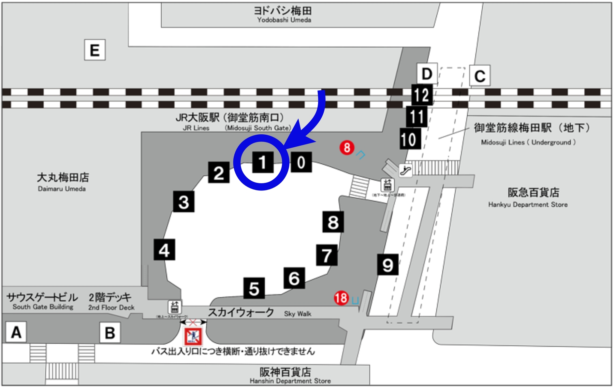
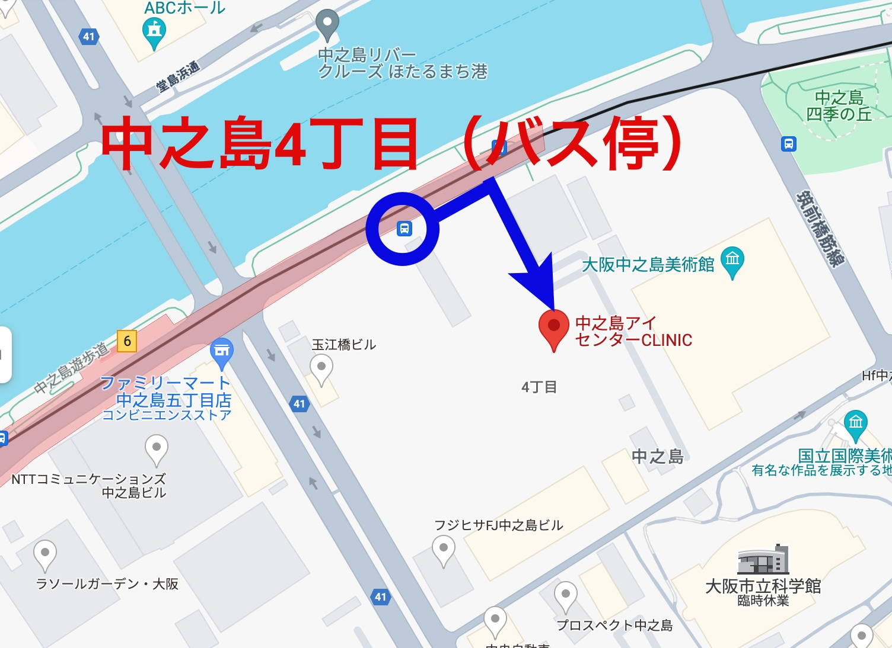

中之島アイセンターCLINICへの行き方
- 大阪駅より大阪シティバス→中之島4丁目より徒歩（2分） ←おすすめです
- 阪神福島駅・JR環状線福島駅・JR東西線新福島駅より徒歩（15分）
- JR中之島線渡辺橋より徒歩（10分）
- 大阪メトロ四ツ橋線 肥後橋駅より徒歩（10分）
大阪シティバス
1番乗り場、53番船津橋行き（大阪駅前→梅田新道→大江橋→渡辺橋→中之島4丁目）
中之島4丁目のバス停で降りて正面です。中之島Qrossに入り、3階までお上がりください。


中之島アイセンターCLINIC
大阪府大阪市北区中之島4丁目3番51号
未来医療国際拠点 Nakanoshima Qross. 3F
06-6147-2088 (予約・問い合わせ)
ホームページ https://eyecenter.jp/ (下の方からLINE予約もできます)